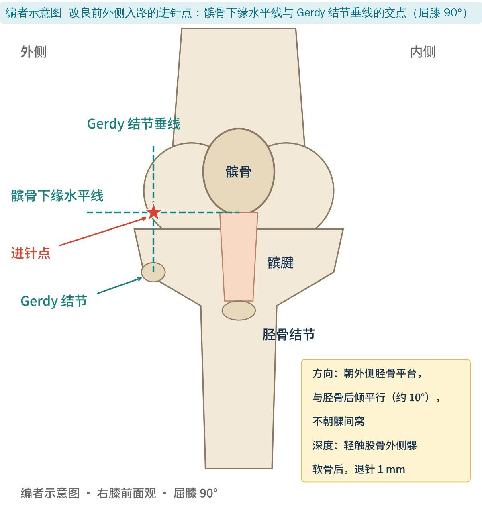
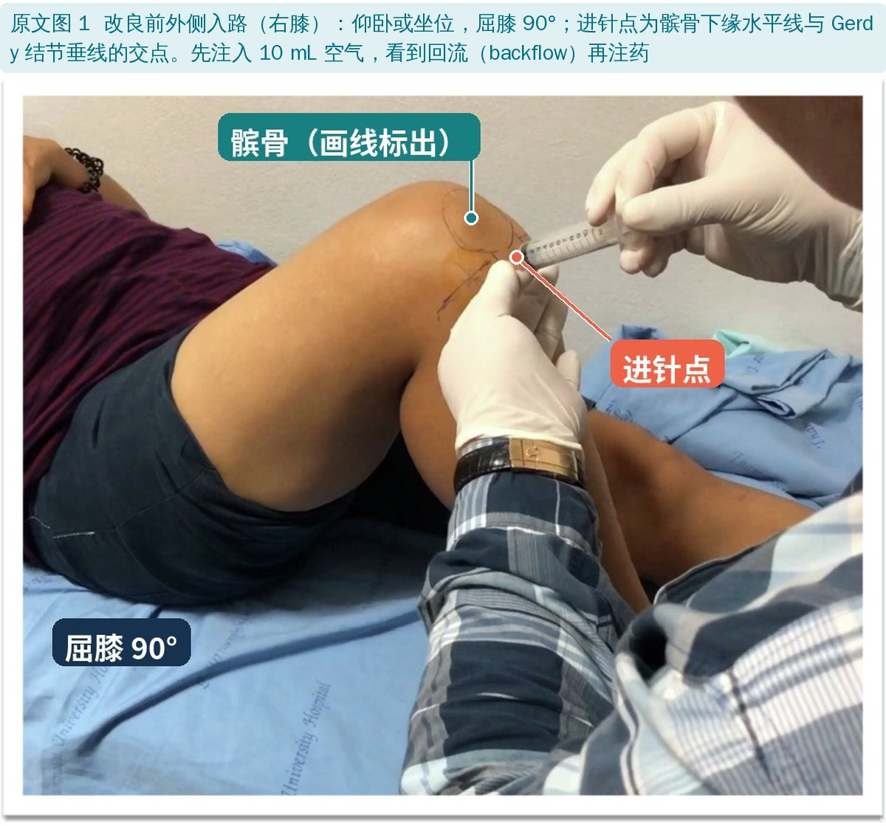
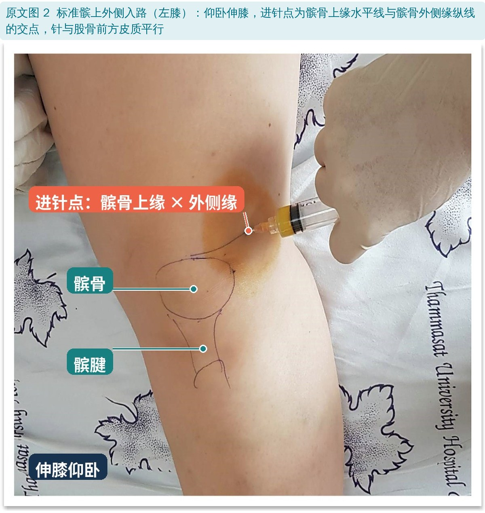
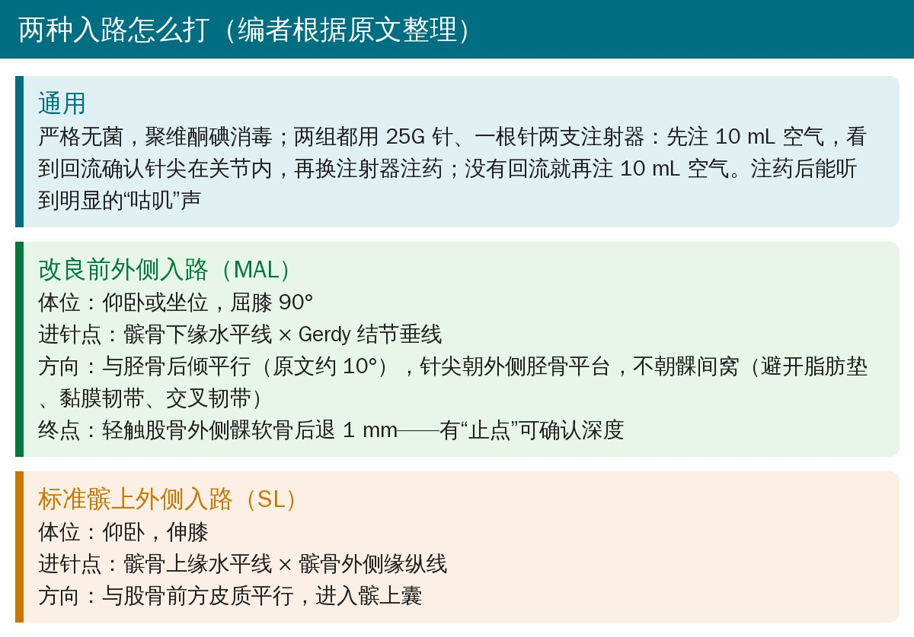
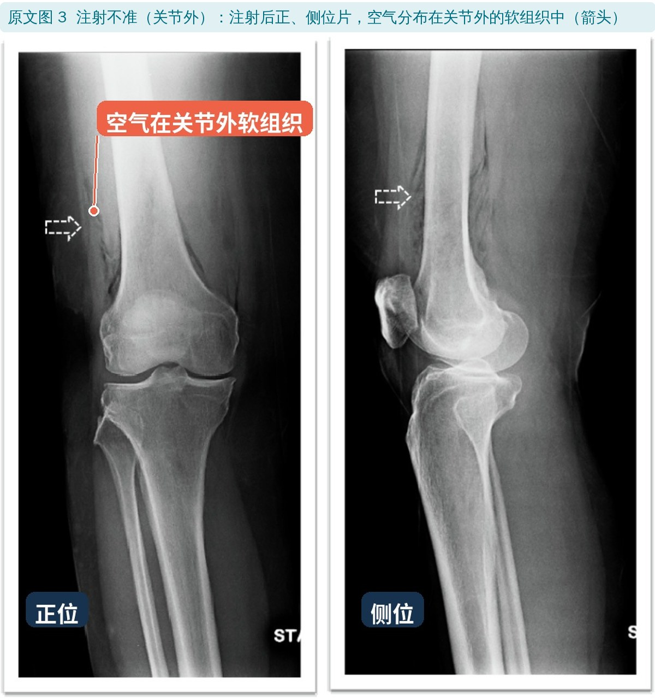
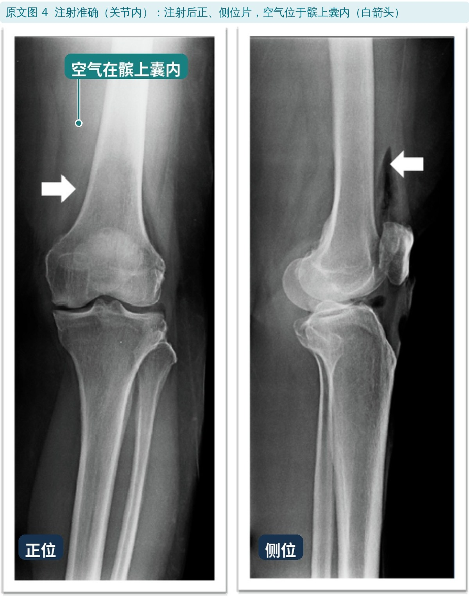
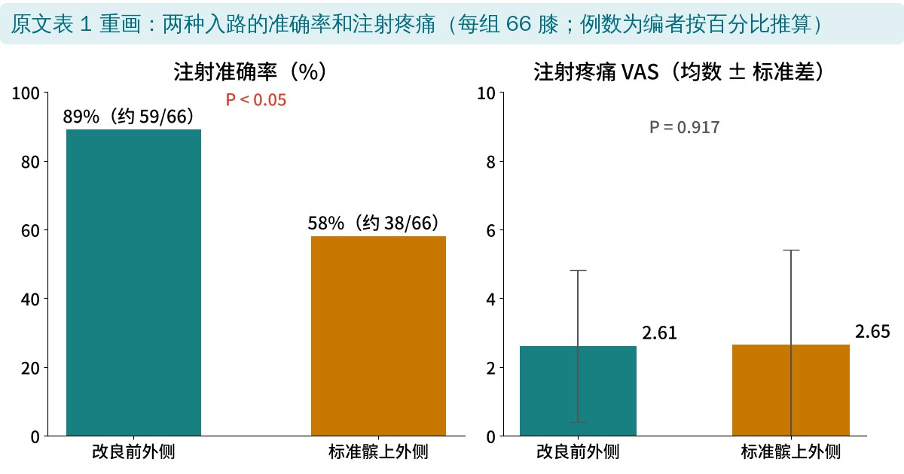

🔖原文信息（编者中文重排）
📚 文献信息
▪ Chernchujit B, Tharakulphan S, Apivatgaroon A, Prasetia R. Accuracy comparisons of intra-articular knee injection between the new modified anterolateral approach and superolateral approach in patients with symptomatic knee osteoarthritis without effusion. Asia-Pacific Journal of Sports Medicine, Arthroscopy, Rehabilitation and Technology. 2019;17:1-4. doi:10.1016/j.asmart.2019.02.001
▪ 作者单位：泰国国立法政大学医学院骨科、孔敬医院骨科、印尼巴查查兰大学骨科
▪ 文章类型：前瞻性对照研究（132 膝，两种入路各 66 膝）
膝骨关节炎很常见，关节腔注射激素或其他药物是常用的保守治疗。药要真的打进关节腔才能发挥作用；打到关节外、前方脂肪垫或滑膜外组织，不仅效果打折，还可能带来皮肤色素脱失、皮下脂肪和肌肉萎缩等局部损害。
难点在于没有积液的“干膝”：抽不出液体，就没法用回抽来确认针尖位置。原文引用的系统综述显示，伸膝位髌上外侧入路准确率最高（约 91%），外侧髌中、前外侧、前内侧入路分别约 85%、67%、72%。作者在标准前外侧入路的基础上提出一种改良前外侧入路，想看它能不能比髌上外侧入路更准。
作者没有比较内侧入路：骨关节炎患者的内侧和髌股关节间隙往往很窄，从这里进针容易伤到软骨、引起疼痛。
• 对象：2014 年 5 月～2015 年 5 月，临床和影像确诊、口服药物效果不好、没有积液的症状性膝骨关节炎（各 Kellgren-Lawrence 分级都纳入）；排除感染、凝血障碍、对注射药物过敏
• 分组：共 132 膝，改良前外侧入路（MAL）和标准髌上外侧入路（SL）各 66 膝
• 操作者：同一位从业 15 年以上的骨科医生
• 确认是否打进关节：微量空气关节造影——注射后立即拍正、侧位片，看空气在关节内还是关节外（图 3、图 4）
• 疼痛：注射完由独立评估者记录视觉模拟评分（VAS）

🔖编者示意图：改良前外侧入路的进针点和方向（根据原文描述绘制）
• 体位：仰卧或坐位，屈膝 90°
• 进针点：髌骨下缘水平线与 Gerdy 结节垂线的交点
• 方向：与胫骨后倾平行（原文约 10°），针尖朝外侧胫骨平台，而不是传统前外侧入路的髁间窝——避开脂肪垫、黏膜韧带和交叉韧带，也不伤软骨和半月板
• 深度：进针到轻触股骨外侧髁软骨，再退 1 mm。作者认为这个“止点”比朝髁间窝进针更好把握深度

🔖原文图 1：改良前外侧入路（图中中文标注为编者所加）
• 体位：仰卧，伸膝
• 进针点：髌骨上缘水平线与髌骨外侧缘纵线的交点
• 方向：与股骨前方皮质平行，进入髌上囊

🔖原文图 2：标准髌上外侧入路（图中中文标注为编者所加）
两组都用 25G 针，一根针配两支注射器：先注入 10 mL 空气，像硬膜外注射那样感受“无阻力”，观察空气回流（backflow）确认针尖在关节内；没有回流就再注 10 mL 空气。看到回流后换注射器注药，注完能听到明显的“咕叽”声。

🔖两种入路操作要点（编者根据原文整理）

🔖原文图 3：注射不准——空气在关节外软组织（箭头）

🔖原文图 4：注射准确——空气在髌上囊内（白箭头）
| 结局 | 改良前外侧（66 膝） | 标准髌上外侧（66 膝） |
|---|---|---|
| 注射准确率 | 89%* | 58%* |
| 注射疼痛 VAS（均数 ± 标准差） | 2.61 ± 2.21 | 2.65 ± 2.76 |
| 并发症 | 无 | 无 |
原文表 1：准确率、疼痛和并发症（中文翻译）。*两组差异有统计学意义，P < 0.05
• 改良前外侧入路准确率 89%，明显高于髌上外侧入路的 58%
• 注射疼痛两组几乎一样（VAS 2.61 vs 2.65，P＝0.917）
• 两组都没有出现不良事件

🔖两组结果对比（编者根据原文表 1 重画）
• 分组方式说不清：摘要写“随机分成两组”，方法部分写的是连续纳入，没有交代怎么随机，局限性里又写“没有随机双盲”
• 没有基线资料：两组的年龄、性别、体重、K-L 分级都没报告，无法判断两组是否可比；也没说多少人是双膝都打
• 单一术者、未设盲：只有一位资深医生操作，他提出了改良入路，可能更熟练；读片的人是否知道分组也没交代
• 髌上外侧组 58% 明显偏低：作者自己引用的综述中髌上外侧入路约 91%，这个差距没有解释，结果能否推广要打问号
• “准确”的判定和重复操作：空气位置不确定时“重复操作”，怎么计入准确率没有说明；两组都用了回流法，可能也影响结果
• 统计方法不对：两组是独立的，准确率是分类变量，应该用卡方检验或 Fisher 精确检验，原文却用了配对 t 检验
• 只看了“打没打进去”：没有随访止痛效果，也没有和超声引导比较
• 优点：用影像确认是否打进关节，标准客观；改良入路屈膝 90° 就能做，作者认为对肥胖、伸膝或屈膝受限、关节间隙很窄的患者更友好
• 膝数前后不一：摘要和方法写 132 膝，结果写“One hundred and twenty-two knees（122 膝）”，但两组各 66 膝合计是 132
• 样本量不够：样本量计算说每种技术至少需要 130 膝，实际每组只有 66 膝；局限性里也承认例数偏少
• “配对设计”：样本量按配对设计计算、用配对 t 检验，但两组是不同的膝
• “随机”前后矛盾：摘要写随机分组，局限性写“没有随机双盲”
• 表 1 与正文：表中并发症写“NA”（不适用），正文写两组都没有不良事件；髌上外侧组的例数没标；P 值写成 0.000
• 角度符号丢失：“屈膝 90”“与胫骨后倾 10 平行”应为 90°、10°
• 小错：“soft sport”应为 soft spot（软点）；“medial agents”应为 medical agents；25G 针引用“2007 WN Robert”不在参考文献里；参考文献 17 的 doi 写成“0.5435”
• 干膝注射不容易打准：这篇里同一位资深医生用髌上外侧入路也只有 58% 进了关节，盲打的准确率不能想当然
• 改良前外侧入路值得了解：屈膝 90° 坐位就能做，进针点用髌骨下缘和 Gerdy 结节两个好摸的标志，朝外侧胫骨平台、触到股骨外侧髁退 1 mm，有明确的深度“止点”
• 先确认再注药：回流法、注药时无阻力、注后的“咕叽”声都是作者用来确认针尖在关节内的线索；条件允许时超声引导更可靠
• 关节腔注射须由有资质的医生操作；对康复治疗师来说，了解进针点、体位和可能的并发症，有助于和医生沟通、做好注射前后的宣教和康复衔接
• 这篇证据等级不高（单中心、单术者、分组方法不清、统计方法有误），结论需要更大规模、规范设计的研究来验证
欢迎关注骨科康复小黄公众号，获取更多物理治疗的专业知识！
📄参考文献：
Chernchujit B, Tharakulphan S, Apivatgaroon A, Prasetia R. Accuracy comparisons of intra-articular knee injection between the new modified anterolateral approach and superolateral approach in patients with symptomatic knee osteoarthritis without effusion. Asia Pac J Sports Med Arthrosc Rehabil Technol. 2019;17:1-4. doi:10.1016/j.asmart.2019.02.001
原文以 CC BY-NC-ND 4.0 协议开放获取，版权归原作者所有。本文为非商业的学术交流中文解读：原文图 1～4 引自原文，图中中文标注为编者所加；示意图、流程卡和结果图为编者根据原文整理，表格为中文翻译。仅供学习交流，如有侵权请联系删除。